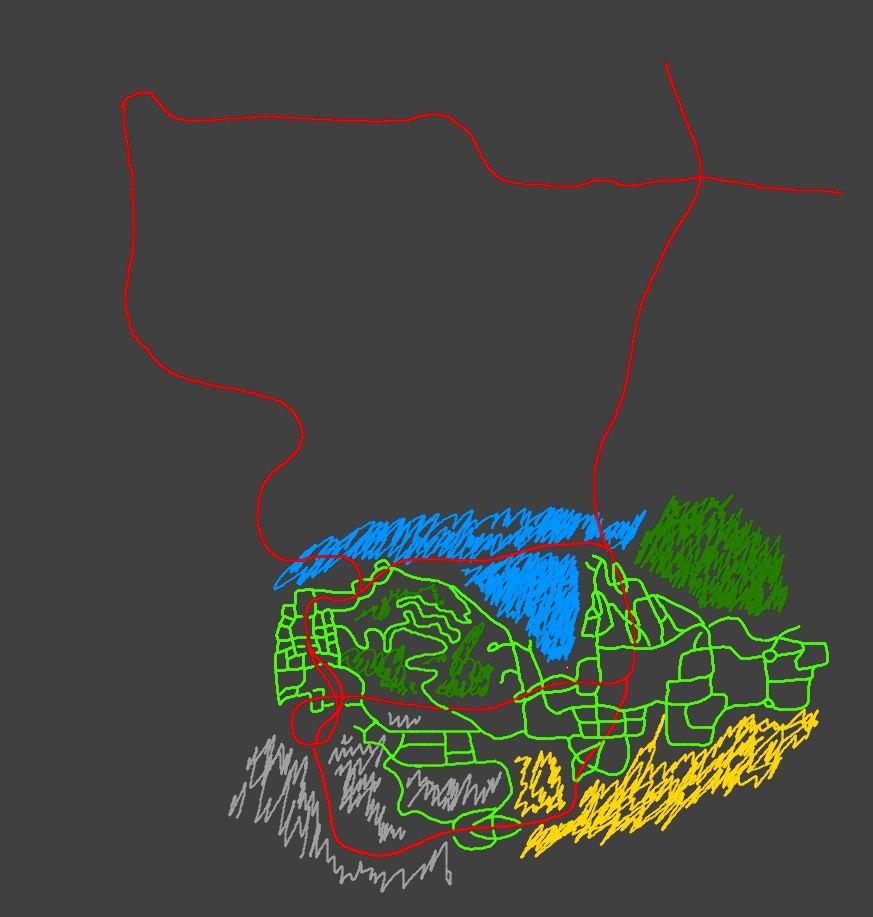

This is a very awesome race map that I made myself

Free hand faster drawing of Chad, much less effort than the Rukia one but wanted to see what speed does at this moment

First drawing in pursuit of becoming a better artist

This was a second attempt to copy a drawing from a screenshot from Bleach. Full color and fancy sparkles because I was tired at that point.